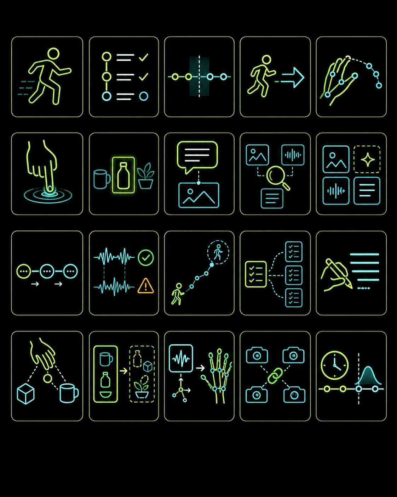

The public suite has two evidence lines. Line 1 uses one public sample
episode to make the 20-task lab inspectable and reproducible. Line 2
uses 128 selected episodes to compare aligned baselines, Qwen3-Omni
v6 LoRA, Cosmos3-Super Reasoner, and Cosmos3-Nano Future Window. The public matrix is complete at 180/180 scored
method-task records, with six compact-proxy cells explicitly marked.
reader modewhat it is / what is public / what to inspect first
Start with the public task suite, then open the evidence.
This page is a guided entry point for one inspectable Xperience-10M sample line and one selected-128 comparison line. Use the detailed tables after you know which evidence line and task layer you are reading.
180method-task records
174direct scores
6compact-proxy scores
34,269128ep windows
Three first clicks.
Each click answers one reader question before the archive-level evidence begins.
Use this landing section to understand the project before opening the archive-level evidence. First identify the two evidence lines, then the 20-task suite, then the result table and public mirrors.
About this public surfaceRopedia Xperience-10M Task Suite
The mark identifies the shared public package across the GitHub repository, GitHub Pages dashboard, Hugging Face Space, artifact dataset, model mirrors, and social preview. Use this area as the project identity checkpoint before reading the 1-episode and selected-128 evidence lines.
A public Xperience-10M task-suite package: one inspectable sample line plus a selected-128 comparison line, both organized around the same 20 task contracts.
Use the 1-episode line for reproducible task-head baselines. Use the 128-episode line for metadata/raw baselines, Qwen3-Omni v6, and Cosmos3 diagnostics.
Direct scores, compact-proxy scores, normalized radar values, adapters, and public mirrors stay labeled separately so the evidence type is visible before interpretation.
reader-first route
Read the project in four passes, then use the detailed tables as evidence.
The page keeps every public artifact, but the fastest path is: understand the 20 tasks, inspect the sample files, compare the two result lines, then open the exact reproducibility surface you need.
Read the project in that order. The 20 tasks are the scored contracts; the four directions are reader-facing research groupings over those tasks; the three foundation pipelines are model-training recipes that reuse the same episode files.
20
scored task layer
One unified task suite.
Every metric, radar axis, and method row uses these same 20 task contracts.
4
4-direction layer
Four ways to read the same tasks.
Human motion, 3D/4D reconstruction, egocentric interaction, and world modeling are groupings over the same tasks.
3
3-pipeline layer
Three ways to train larger models.
Spatial intelligence, human-video world models, and vision-language-action models reuse the same files with different input-output recipes.
score questionIf it has a metric, it belongs to the 20-task layer.
Task cards, radars, and the 180-record table all use the same numbered task IDs.
research questionIf it explains what the evidence studies, it belongs to the 4-direction layer.
Directions A-D group the same 20 tasks. They are not extra tasks or a second tier.
training questionIf it describes model inputs and targets, it belongs to the 3-pipeline layer.
Spatial, world-model, and VLA pipelines are recipes for future scale-up and task-grounded model training.
20 tasksScore axes used by every method row.4 directionsResearch questions for reading those scores.3 pipelinesTraining recipes for larger foundation models.
20 task contractsEvery score axis is one of these tasks.
The generated image uses one node per task; this list gives the exact public task names.
01Action Recognition
02Procedure Step Recognition
03Action Boundary Detection
04Next-Action Prediction
05Hand Trajectory Forecasting
06Contact State Prediction
07Object Relevance Prediction
08Language Grounding
09Cross-Modal Retrieval
10Cross-Modal Reconstruction
11Temporal Order Verification
12Multimodal Synchronization Detection
13Long-Horizon Next-Action Forecasting
14Long-Horizon Next-Subtask Forecasting
15Interaction Text Prediction
16Action-Object Relation Prediction
17Future Object-Set Forecasting
18IMU-to-Hand Pose Reconstruction
19Camera-View Synchronization Retrieval
20Time-to-Next-Transition Regression
4 research directionsThe same tasks are grouped by research question.
Tasks can support more than one direction. This layer answers what the scores study; it is not a separate benchmark or task tier.
AHuman Modeling & Motion Understanding
B3D/4D Reconstruction & Neural Rendering
CEgocentric Vision & Interaction
DScene Reconstruction & World Modeling
3 foundation pipelinesThe training tracks reuse the task and modality contracts.
These are scale-up recipes for model training. They answer how the same files can be turned into larger model inputs and targets.
1Spatial intelligence models
2Human-video world models
3Vision-language-action models
scored contracts20 tasks
Action, subtask, object, language, motion, synchronization, retrieval, and forecasting targets evaluated by each public method row.
reader grouping4 directions
Human Modeling & Motion Understanding; 3D/4D Reconstruction & Neural Rendering; Egocentric Vision & Interaction; Scene Reconstruction & World Modeling.
training tracks3 foundation pipelines
Spatial intelligence models; Human-video world models; Vision-language-action models.
20 tasks are the score axes.->4 directions organize what the scores study.->3 pipelines describe how to train larger models.
Line
Data unit
Score statement
Best use
Read separately from
Start here
1 sample episode
One public Xperience-10M sample episode; 5,821 frames; 1,161 aligned 20-frame windows; 8,546-dimensional feature contract.
40/40 direct scores from Minimal and Neural MLP heads.
Raw sample inspection, file organization, task definitions, local reproduction, and controlled Minimal-vs-Neural baseline behavior.
The selected-128 comparison rows and broader held-out model behavior.
40/40 direct scores from verified public-safe reasoner and future-window artifacts.
Cosmos3 reasoner and future-window diagnostics on the selected-128 surface.
Cosmos3-Super Forward-Dynamics LoRA is published as a separate fine-tuned adapter with weights/results; it is not counted as a 20-task matrix method row.
Qwen run
Purpose
Main change
Eval signal
Use now
v1
Prove the selected-128 LoRA/eval/package loop.
First verified 96/16/16 selected-episode Qwen3-Omni LoRA run.
448 eval; JSON 0.8750; contact 0.6451.
Lineage only.
v2
Make answers schema-checked.
Structured-JSON contract with full-8-GPU LoRA on the same split.
448 eval; JSON 0.9978; contact 0.7188.
Structured-output ablation.
v3
Separate prompt/eval effects from training.
Strict-label prompt/eval over the v2 adapter; no new adapter training.
448 eval; JSON 1.0000; contact 0.7210.
Prompt/eval ablation.
v4
Test longer structured-JSON LoRA training.
New four-epoch full-8-GPU adapter on the same selected split.
448 eval; JSON 1.0000; contact 0.7299.
Overfit/metric-tradeoff evidence.
v5
Move to denser multiscale evaluation.
Multiscale cap96 export with 4,032 held-out predictions.
4,032 eval; JSON 1.0000; contact 0.7865.
Pinned prior release; stronger on several non-contact metrics.
v6
Publish the current Qwen 20-task row.
Rank64/lr5e-5 multiscale LoRA plus verified task-specific probes.
4,032 eval; JSON 0.9990; contact 0.8177.
Current public 20-task Qwen3-Omni row.
Qwen v1-v6 are run-lineage labels inside the selected-128 evidence line, not project evidence lines. Use v6 for the public 20-task Qwen3-Omni row; keep v5 as the pinned prior multiscale comparator; read v1-v4 as pipeline-hardening and ablation evidence. Full details are available in the Qwen lineage data and Qwen lineage note.
01 understand
Start with scope and status
Use this route if you need the project story, what is public, and how to read each result family.
Choose the right entry point without losing the evidence trail.
The project keeps source code, visual explanation, derived artifacts, model outputs, and release checks on different public surfaces. This map shows what each surface is responsible for before you dive into the full file set.
This panel now does one job: explain which public surface owns which type of evidence. Use the dedicated reading path for step-by-step onboarding, the glossary for terminology, and the artifact library for detailed file-level links.
From one public episode to an extensible embodied-AI task lab.
Xperience-10M is much larger than the public sample. This project focuses on the sample available now, turns it into clear task contracts and baseline artifacts, and keeps the same data contract ready for held-out multi-episode training when more episodes are prepared.
What this is
A research-development lab for understanding synchronized egocentric multimodal data, defining embodied-AI tasks, and testing small baselines before omni-model fine-tuning.
What is implemented
1,161 aligned windows from one public sample episode
20 unified task contracts with minimal and neural evidence
One shared setup across all 20 task axes
Four research-direction maps and extension probes
What comes next
The next model-quality stage is stronger action/subtask modeling on the same held-out split, using dense/multiscale windows before requiring more raw episodes.
Data understanding
Maps one public episode into synchronized windows across video, audio, depth, pose/SLAM, mocap, IMU, calibration, and language-derived signals.
Task design
Defines embodied-AI inputs, process modules, outputs, metrics, and case-study walkthroughs instead of treating the sample as a generic classification file.
Evaluation discipline
Keeps chronological splits, predictions, confusion matrices, leakage notes, and single-episode limits visible before moving to broader model-quality reads.
Scale-up readiness
Connects the same data contract to 128-episode baselines, a no-new-episode enhancement pack, Qwen3-Omni LoRA, Cosmos-style world modeling, policy/VLA tracks, and the later Xperience-native pretraining goal.
One comparison story, detailed charts in the task-suite section.
The overview keeps only the headline comparison so the same radar visuals are not repeated. Open the task-suite section for the enlarged unified radar, the 1-episode split radar, the 128-episode split radar, and the source-linked 180-record table.
1-episode line
Minimal and Neural MLP baselines cover 40/40 method-task records on the original public-sample episode.
128-episode line
Metadata, raw-feature, Qwen3-Omni, and Cosmos3 methods cover 140/140 rows with direct/proxy evidence notes preserved.
Best detailed view
The task-suite section holds the large readable radars, normalized-score notes, and the downloadable chart data.
Use this as the front door for the project: it links the unified 20 tasks, four research tracks, current sample evidence, and the multi-episode Qwen3-Omni scale-up path.
One Xperience-10M public sample episode is converted into aligned windows and a documented feature contract.
frames 5,821windows 1,161features 8,546
verified
Task suite and baseline heads
The unified task suite has minimal and neural baseline evidence across one 20-axis task surface with shared windows, splits, and label discipline.
tasks 20minimal heads 20neural heads 20
verified
Dataset source alignment
The public description is aligned to the official gated Xperience-10M dataset card, including modalities, scale, access, and current project coverage. The source snapshot records 31.9 TB on the HF surface, an about-1PB full-scale storage statement, 12,103 episode folders as upstream metadata, not a local data inventory, public sample license cc-by-nc-4.0, HOMIE Toolkit and Rerun 0.29.0 source tooling, and the official limited diversity note. See the source-alignment record for exact provenance.
full dataset gatedsample scope 1 episoderaw data mirrored no
verified
Public research artifacts
Metrics, figures, walkthroughs, baseline weights, Qwen3-Omni results, and Cosmos3 public-safe packages are staged across GitHub, GitHub Pages, and Hugging Face.
The first selected-episode LoRA pilot is packaged with real held-out predictions and metrics. It proves the pipeline, while the weak scores make it a baseline for error analysis.
split 96 / 16 / 16test windows 4,032JSON validity 99.90%
current plan
No-new-episode stress plan
Shows how the current selected split can be stressed without more episodes: dense windows, hierarchical labels, raw-feature shards, and `multiscale_20s10_40s20_80s40` as the next export target.
current windows 3,808multiscale estimate 106,095data reference selected-128 enhancement plan
not redistributed
Data governance
Raw MP4/HDF5/RRD files, private gated Xperience-10M data, and full Qwen weights are excluded from the public repo and HF mirrors.
raw Xperience-10M excludedfull Qwen weights excludedderived artifacts included
The project path moves from the current public-sample task lab to the latest verified Qwen3-Omni diagnostic run, same-split 128-episode baseline alignment, a no-new-episode enhancement pack, action/subtask error analysis, robustness runs, world/policy tracks, and the future Xperience Embodied Foundation Model pretraining goal.
implemented
Public-Sample Task Lab
One public episode is converted into aligned windows, task contracts, minimal baselines, neural heads, walkthroughs, and figures.
Entry
Public Xperience-10M sample episode available.
Evidence
Status, protocol, takeaways, summary metrics, and episode-task outputs.
implemented
Multi-Episode Data Preparation
Prepare official gated episodes while preserving episode-level separation and recording missing-view coverage. The first selected split is available for Qwen3-Omni diagnostics.
Entry
Gated data access and enough storage for selected episodes.
Evidence
Selected-episode plan, data boundary, preparation notes, and verified package summary.
verified latest run
Qwen3-Omni LoRA Latest Diagnostic Branch
Train lightweight adapters on selected prepared episodes and evaluate on held-out episodes with committed predictions, metrics, and run reports.
Entry
Selected episodes prepared with no train/test episode leakage.
Evidence
Verified result summary, v5/v6 comparison, dataset manifest, training metadata, progress logs, metrics, and predictions.
verified companion result
128-Episode Same-Split Simple/NN Baselines
Align simple metadata/text baselines, raw-feature proxies, and neural MLP baselines to the same selected 96/16/16 split and the unified 20-task axes used by the public result matrix.
Entry
Derived Qwen JSONL export for the selected 96/16/16 split.
Evidence
Baseline alignment report, summary metrics, task metrics, and the 128-task baseline runner.
current no-new-episode plan
Selected-128 enhancement stage
Use the same selected split, estimate dense/multiscale window exports, define hierarchical action/subtask targets, and prioritize raw-feature shards for tasks that metadata baselines cannot cover.
Entry
Current 3,808-window selected 96/16/16 export and verified Qwen v4 metrics.
Evidence
Enhancement note, structured enhancement data, dense-window CSV, and the enhancement builder script.
active next step
Action/Subtask Error-Analysis Pass
Keep the 96/16/16 split, tighten JSON decoding or target formatting, and analyze action/subtask failures before presenting stronger model-quality numbers.
Entry
The final diagnostic package is verified, meets strict JSON validity, and exposes weak action/subtask quality.
Evidence
Updated quality-target report, error-analysis tables, held-out metrics, and public-safe package.
current
Foundation-Model Selection Matrix
Keep Qwen3-Omni as the first trainable held-out pilot, use Cosmos 3 for world modeling and forward-dynamics trainer development, and stage policy candidates after robot-compatible action targets are explicit.
Entry
Completed 128-episode preparation or a smaller 3-8 episode preprocessing dry run.
Evidence
Foundation model plan, source links, model-specific entry conditions, and evaluation additions.
partially implemented
64-128 Episode Robustness Run
Test whether pilot conclusions survive broader sessions, missing modalities, and stronger ablations.
Entry
Selected multi-episode pilot trains and evaluates cleanly.
Evidence
Metrics by session, task, modality, ablation, and failure type.
planned
Cosmos 3 and Policy-Model Extensions
Extend toward future-window prediction, action-conditioned world modeling, synthetic-data tests, policy-style next action, and affordance reasoning.
Entry
Enough multi-episode data, compute budget, and model-specific action or world-state targets.
Evidence
Task-specific held-out evaluations, qualitative inspection, and updated model cards.
future
Xperience Embodied Foundation Model Pretraining
Pretrain an Xperience-native domain model over synchronized video, audio, depth, pose, mocap, IMU, and language after smaller scaling stages prove value.
This is the 3-pipeline layer of the public structure. It is separate from the four research directions: directions organize what the 20 task scores study, while these pipelines describe how Xperience-10M files can train larger spatial, world-model, and vision-language-action models.
High-resolution direction slide
Spatial intelligence models
Train spatial-memory models from multiview RGB, egocentric video, depth, pose, calibration, object/contact cues, and language prompts; evaluate spatial QA, object permanence, counting, retrieval, and pose-aware consistency.
Sample input
Use windows.csv and shared_windows.npz to slice each 20-frame window, then join six MP4 RGB streams with annotation.hdf5 depth, camera pose, SLAM/calibration, object cues, contacts, and optional language questions.
Training output
Build targets such as camera-view match, object relevance, object-set memory, depth/pose reconstruction proxy, caption-grounded retrieval, and spatial QA answers derived from the same public annotation timeline.
Train future-prediction models from observed interaction windows to score next action, next subtask, future object set, contact transition, camera-motion delta, and latent future state, with Qwen-style probes and Cosmos-style dynamics kept separate.
Sample input
Take the current 20-frame observed window at time t from shared_windows.npz: RGB/audio/sensor summaries, hand/body motion, camera pose, current object/contact state, and current action/subtask context only.
Training output
Shift the same episode timeline forward to produce next-action, next-subtask, future object-set, contact-transition, time-to-transition, camera-motion delta, or latent/future-feature targets. Future labels stay out of the input.
Train VLA or policy-compatible heads only after converting egocentric video, captions, hand/body motion, contacts, objects, and procedures into traceable action tokens, chunks, and object-conditioned action targets.
Sample input
Use egocentric/fisheye video windows, caption/object context from annotation.hdf5, hand/body mocap, contact state, and current subtask text as the observation-language side of each training pair.
Training output
For the one-sample suite, output action-token proxies: current/next action, object-conditioned action relation, contact state, interaction-text class, subtask transition, or hand-trajectory/action-chunk proxy. Robot action chunks need a later retargeting converter.
The protocol is generated from committed metric artifacts so readers can see the exact data unit, split, task targets, leakage controls, and current limitations before comparing scores.
Data unit
One 20-frame aligned window from the public sample episode, stride 5 frames, 1,161 windows total, represented by 8,546 synchronized multimodal dimensions.
Single-episode chronological 70/30 train/test split. This avoids random future-window mixing; cross-episode generalization is measured in the later multi-episode pilot.
Scalers fit on train windows only; future labels, target-side signals, caption/object labels, and contact labels stay on the target side unless explicitly queried.
Qwen3-Omni is the first trainable baseline, Cosmos 3 is the world-model track with a camera-pose proxy forward-dynamics contract ready for trainer work, policy models wait for robot-compatible action targets, and Xperience-native pretraining remains a later full-corpus goal.
This public-sample run covers single-episode task development. The selected multi-episode Qwen3-Omni final diagnostic result is verified and meets the JSON-validity target; Cosmos3-Nano has a verified future-window compatibility package; and Cosmos3-Super has a verified base-weight JSON-task evaluation plus a fine-tuned forward-dynamics LoRA branch. The next stage is action/subtask error analysis, stronger held-out metrics, and policy-target conversion.
Before adding episodes, the suite should try `multiscale_20s10_40s20_80s40`, hierarchical action/subtask targets, label-normalized scoring, and compact raw-feature shards for unsupported tasks.
Future Omni, Cosmos, and policy tracks use the same episode split discipline, training metadata, held-out predictions, metrics, run report, and public-safe package gate.
The project shows the completed public-sample task suite and the first verified multi-episode Qwen3-Omni diagnostic pilot, then lays out the next quality-improvement and model-extension steps.
verified
Sample windows and 20-task results
5,821 frames become 1,161 synchronized 20-frame windows with an 8,546-dimensional representation, 20 task contracts, and the current 180-record public result matrix.
Audio variants improve the primary metric on 6 walkthrough-backed task contracts, while the feature manifest and raw browser keep each modality source inspectable.
The Ropedia directions are labeled as direct, proxy, or diagnostic coverage and connected to spatial intelligence, human-video world-model, and vision-language-action training paths.
Qwen3-Omni is the trainable held-out LoRA track; Cosmos3 covers world-model diagnostics; OpenVLA/openpi/GR00T become policy candidates after robot-compatible action conversion; Xperience-native pretraining remains the later full-corpus goal.
The selected 96/16/16 split has a verified Qwen3-Omni v6 package with 4,032 held-out predictions and 99.90% JSON validity. Cosmos3-Nano, Cosmos3-Super Reasoner, and Cosmos3-Super Forward-Dynamics LoRA remain separate public-safe diagnostic branches.
The current selected-128 line has a source/feature index and can be pushed through dense/multiscale windows without changing the held-out episode split; the recommended scenario is `multiscale_20s10_40s20_80s40`.
The website, GitHub repo, HF Space, artifact dataset, baseline model repo, consolidated weights/results repo, collection, official dataset, and HOMIE toolkit point to the same research package.
The logo, raw-sample stream thumbnails, task-suite figure, unified radar, model-architecture figures, and LoRA training-flow figure are indexed and reused across public surfaces.
The project shares derived task artifacts, figures, reports, lightweight baselines, reproduction commands, validators, and audit records. Raw videos, raw annotations, RRD visualizations, gated data, and full Qwen weights stay outside the repo.
A newcomer should be able to move from the dataset sample to the task design, model baselines, current limitations, and scale-up plan without reading every file first.
01
Understand the current scope
Start with the project brief, status, dataset context, task results, roadmap, and Qwen3-Omni scale-up notes. They separate implemented single-episode work from the prepared multi-episode stage.
The multi-episode Qwen3-Omni path now has a final verified diagnostic package and public LoRA adapter. The native-pretraining plan shows how this can grow into a full-corpus research direction after action/subtask improvements and stronger task metrics.
Use the no-new-episode enhancement pack before requesting more storage: it records dense-window estimates, `multiscale_20s10_40s20_80s40`, hierarchical labels, and raw-feature shard priorities.
Verified nowOne public episode, 5,821 frames, 1,161 aligned windows, 8,546 dimensions, 20 unified task contracts, 12 original neural heads, and 4 direction-extension probes.
Next: no-new-episode scaleThe selected 128-episode suite should next use dense/multiscale windows, hierarchical labels, and raw-feature shards before adding more episodes.
Next: error analysisThe selected 128-episode Qwen3-Omni LoRA result has a final verified diagnostic package; JSON validity meets target, and the next pass should improve action/subtask quality.
Not redistributedRaw videos, raw annotations, full Qwen weights, and private gated Xperience-10M data are not included in the public repo or HF bundles.
Aligned with the official dataset card.
The official Xperience-10M card describes a gated, large-scale 4D egocentric multimodal dataset. This project records that full upstream scope while focusing the implemented artifacts on one public sample episode. The source-alignment record keeps 31.9 TB, about-1PB, 12,103 episode folders, cc-by-nc-4.0, HOMIE Toolkit, Rerun 0.29.0, not a local data inventory, and limited diversity visible on the public site.
Official dataset
Xperience-10M is a gated large-scale egocentric multimodal dataset for embodied AI, robotics, spatial intelligence, and world modeling.
One public sample episode is exposed through the raw browser and modality atlas: synchronized video, embedded audio, HDF5 annotation groups, depth, pose/SLAM, mocap, IMU, calibration, language-derived signals, and source links in one place.
The selected 128-episode Qwen3-Omni LoRA v6 diagnostic run is verified with 4,032 held-out test predictions and 99.90% JSON validity. Action/subtask metrics are still weak, so this remains a baseline for error analysis.
Raw MP4, HDF5, RRD files are streamed from the official public sample source when opened here; private gated data and full Qwen weights are not redistributed in this project.
This project is for research exploration and excludes identity recognition, surveillance, biometric profiling, sensitive-attribute inference, and safety-critical deployment.
Open each official Xperience-10M sample file from the project page. Video and audio use compact browser previews derived from the official MP4 files, with direct links beside them for the full raw Hugging Face sources. HDF5 and RRD files are shown with their role, size, organization, and direct source links.
fisheye_cam0.mp4
Fisheye camera 0 stream and the public sample audio source. This file can be played as video and as the embedded audio track.
video + audio
Playing a 12 second fast-start preview derived from the official raw MP4. Use the source link for the complete file.
Embedded audio preview from fisheye_cam0.mp4
Video features feed visual tasks; the embedded audio stream feeds audio ablation and acoustic feature blocks.
The official public sample is one episode folder. The task suite reads the HDF5 annotations and six synchronized MP4 streams, then writes 20-frame windows with a 5-frame stride.
The raw HDF5 is a binary container, so the browser shows its organization rather than loading the whole file into memory.
calibrationCamera intrinsics/extrinsics and static alignment values.captionJSON text with actions, objects, interactions, segments, and global summary.depthDepth maps and confidence channels aligned to the episode timeline.full_body_mocapFull-body joint and contact signals for human motion modeling.hand_mocapLeft and right hand joint trajectories used by forecast tasks.imuAccelerometer and gyroscope streams sampled above video rate.metadataEpisode metadata, frame indexing, and source bookkeeping.slamCamera trajectory, pose, and sparse SLAM point-cloud information.videoVideo metadata and per-frame alignment information.
Stream-to-feature use
The source streams are summarized once here, next to the playable files and HDF5 map.
VideoSix synchronized MP4 streams feed RGB, fisheye, stereo, and frame-statistic task inputs.AudioThe embedded fisheye_cam0 audio feeds acoustic feature blocks and audio ablations.DepthDepth maps and confidence channels provide geometry signals for spatial and reconstruction probes.Pose / SLAMTrajectory, camera pose, and sparse map values become position and orientation features.Motion captureBody and hand joint tracks support motion, contact, hand forecast, and policy-style targets.InertialAccelerometer and gyroscope streams become wearable-motion statistics.LanguageObject tags and caption-derived labels become semantic targets; raw caption text remains governed by the official sample.
Small derived modality thumbnails remain in the modality atlas data; raw MP4, HDF5, and RRD files are not redistributed.
Ropedia Xperience-10M 20-task suite.
Task map, radar comparisons, task cards, and the 180-result table are kept in one reading flow. Start with the map, inspect the score surfaces, then open each task card for its input, process, output, metric, and all nine public method scores.
unified task index
All 20 tasks are one suite, not a separate tier.
Each axis below has a task card with nine raw method scores, normalized radar values, source artifacts, and matching method-row entries in the 180-result matrix.
Open full generated task-map figureLarge overview kept here for visual scanning after the compact index.
Unified plus split radars
The unified radar keeps all nine methods in one comparison board, but groups them into small-multiple panels so each method family can be read directly. The split radars separate the 1-episode Minimal/NN baseline comparison from the 128-episode metadata/raw, Qwen3-Omni v6 LoRA, and Cosmos3-Super/Nano comparison.
Metric normalization
Higher-is-better metrics are normalized to 0-1; lower-is-better metrics are converted to best/value within the task. The SVG uses sqrt(normalized score) only for visual radius, while raw values, linear normalized scores, status reasons, sources, and compact proxy notes remain in the data mirrors.
Score/proxy audit
The matrix has 180/180 scored method-task records: 174 direct scores and 6 compact-proxy scores. The audit records the source artifact, metric key, and proxy reason for each marked cell.
1-Episode 20-Task Radar
Minimal and Neural MLP are both scored on all 20 public-sample task contracts in one enlarged panel without 128-episode methods competing for attention.
Seven aligned 128-episode methods cover all 20 axes across metadata/text, raw-feature, and foundation-model panels. Proxy axes stay labeled in the chart and source data.
Each card uses its assigned icon and shows the task name, input sources, process, output target, metric, and compact nine-method score panel. Use the filters for scanning; the cards stay tied to the task map, radar axes, and 180-record matrix.
Assigned visual language for the 20 tasks.
The overall generated atlas keeps the icon family visible, while each task card below uses its own crisp assigned SVG for reliable loading and public mirrors.

From raw episode to research artifacts.
Every script works from one data contract: aligned multimodal windows, explicit labels, cached feature extraction, and a manifest that makes omitted modalities visible.
from data to score
One pipeline, five reader-visible checkpoints.
This is the shortest way to understand the method section: start from official synchronized files, build aligned windows, create task targets, run method heads or model probes, then publish source-linked metrics.
20-frame windows with a 5-frame stride keep the input unit consistent across task heads and selected-128 exports.
Task targets
Each window maps to one of the 20 contracts: classification, forecasting, retrieval, reconstruction, synchronization, or regression.
Method rows
Minimal, Neural MLP, selected-128 metadata/raw baselines, Qwen3-Omni v6, Cosmos3-Super, and Cosmos3-Nano produce the public method rows.
Verified outputs
Metrics, predictions, matrices, radar data, validators, and mirror parity checks are published with direct/proxy status preserved.
Qwen3-Omni LoRA training flow
Raw valid episodes move through split validation, parallel export, video/audio/text formatting, sensor-bridge features, LoRA training, and sealed held-out evaluation.
What the figure represents
It documents the selected 128-episode final diagnostic result and the action/subtask improvement path for stronger held-out metrics.
What this project enables
It demonstrates the full development loop: reading Xperience-10M sample data, aligning modalities, converting them into model-ready windows, defining meaningful tasks, producing metrics, and packaging artifacts for continued research.
What still needs more data
General embodied-intelligence model quality requires many episodes and held-out episode splits; the public sample is the development harness for that next stage.
Results by evidence line.
Read results in this order: choose the line, open the matching radar, inspect the matrix row, then check proxy flags before interpreting totals.
i
Cite raw metric values; use radar values only as visual summaries.
The raw value keeps the task metric and scale, such as macro-F1, MRR, MAE, or R2. The normalized radar value is a 0-1 plotting transform for comparing shapes across tasks.
cite this
Raw metric value
The score printed in each table cell is the value emitted by the runner or verified package. Use this value in text, tables, and comparisons.
visual only
Normalized radar value
The radar converts mixed metrics to a 0-1 plotting scale. It helps pattern recognition, but it is not a replacement for the raw metric.
status first
Direct vs compact-proxy
Direct scores use the task target. Compact-proxy scores are bounded substitutes where a raw public target is unavailable, and stay marked before comparison.
Result citation ledger
Reader need
Use this value
Why
Where it appears
Write a paper or README number
Raw metric value
This is emitted by the runner or verified result package and keeps the original metric scale.
180-result table cells, result JSON, method summaries.
Compare shapes across many tasks
Normalized radar value
This is a 0-1 plotting transform for visual comparison only; cite the raw metric beside it.
Unified radar and split radar charts.
Interpret a low-availability target
Compact-proxy score plus its audit note
The task target is represented by a bounded substitute, so the proxy label and reason travel with the value.
Metadata/raw baselines, Qwen3-Omni v6 LoRA, Cosmos3-Super Reasoner, and Cosmos3-Nano Future Window use the aligned 128-episode surface. It has 134 direct scores plus 6 compact-proxy scores.
best read as
A same-split comparison table with explicit source and proxy status.
All methods x all 20 tasks, in one source-linked table.
Each cell shows the raw metric value to cite, the normalized radar value, the metric key, and a direct/proxy badge. The table is generated from the same structured matrix data used by the radar, so values stay aligned across GitHub, the website, and Hugging Face mirrors.
open full 180-score audit tableUse this after the citation ledger. It contains the method summary, every method-task cell, direct/proxy badges, raw metric values, normalized radar values, and source-aligned evidence notes.
direct task scoreiA metric computed against the task target directly. This is the preferred score type in the 20-task matrix.compact proxy scoreiA bounded proxy metric when a direct raw target is not publicly available. It stays explicit so readers do not over-read it.raw value is citeableiThe original metric value emitted by the runner or verified package. This is the value to cite.normalized value is radar-onlyiA 0-1 plotting value used only to draw comparable radar polygons across metrics with different scales.
MethodiOne named method family in the matrix, such as Minimal, 128ep Raw NN, Qwen3-Omni v6, or Cosmos3-Super.
LineiA reading lane for a group of results: Line 1 is one public sample episode; Line 2 is selected-128 held-out comparison.
RecordsiOne method evaluated on one task. 9 methods x 20 tasks gives 180 public result records.
DirectiA metric computed against the task target directly. This is the preferred score type in the 20-task matrix.
ProxyiA bounded proxy metric when a direct raw target is not publicly available. It stays explicit so readers do not over-read it.
Scope
Loading result summary...
Raw and normalized scores for 9 methods across 20 Xperience-10M tasks.
Method
Loading tasks...
Loading 180-result matrix...
Best-practice reading rule: compare methods within the same evidence line first, then use the proxy badges before interpreting cross-method totals. Six compact-proxy cells are intentionally visible rather than blended into direct raw-target scores.
Small baselines, no hidden machinery.
Motion-only and all-feature classifiers use lightweight heads so the comparison stays readable on a laptop and easy to inspect. They now sit beside the result matrix instead of opening a separate results page.
Motion-only action
0.9688macro-F1, 18 classes
Current all-feature action
0.9829macro-F1, 8,546 dimensions
Motion-only subtask
0.9528macro-F1, 14 classes
Current all-feature subtask
0.9173macro-F1, chronological caveats
Neural MLP heads, same task contracts.
The neural baseline keeps the same windows, splits, and leakage filters, then swaps in small PyTorch MLP heads. Read it as a nonlinear-head check before heavier Qwen3/Cosmos model branches.
Neural hand forecast
0.1079MPJPE, down from 0.8647 minimal
Neural temporal order
0.8520F1, adjacent-window diagnostic
Neural misalignment
0.7153F1, shifted motion/visual/audio pairs
Neural cross-modal retrieval
0.1300MRR; ridge remains stronger here
Diagnostics separate memorization from signal.
These charts keep the main lesson visible: within-episode labels can be easy under some splits, while retrieval, grounding, forecasting, and alignment remain the useful probes.
The public sample is converted into 5,821 frames, 1,161 aligned 20-frame windows, and an 8,546-dimensional representation for repeatable task evaluation.
All-feature action reaches 0.9829 macro-F1 on its local split, while the chronological action head in the core task suite is 0.0500 macro-F1 with four unseen later action labels.
This is the 4-direction layer of the public structure. Each direction groups task evidence by research question; it does not create a separate task set. Each task is mapped as direct, proxy, or diagnostic evidence using the same minimal and Neural MLP baseline contracts.
partially implemented
A. Human Modeling & Motion Understanding
Direct evidence comes from hand trajectory forecasting and contact prediction; action and object relevance are supporting proxies.
2direct2proxy0diagnostic
prerequisite evidence
B. 3D/4D Reconstruction & Neural Rendering
Cross-modal retrieval, modality reconstruction, and misalignment detection check reconstruction prerequisites, not full geometry.
Current probes cover task state, object relevance, retrieval, reconstruction, temporal order, and alignment but no persistent map yet.
0direct6proxy3diagnostic
Baseline 1: minimal heads
Softmax, logistic, ridge, and retrieval heads keep every input/output contract readable. They are the first sanity check for whether a task is well-posed.
Baseline 2: neural MLP heads
Small PyTorch MLP classifiers/regressors reuse the same features and splits. They test nonlinear gains before heavier Omni fine-tuning.
Unified 20-task evidence and provenance.
All 20 tasks live in the same task table, task-card grid, radar, and 180-record result matrix. Historical result paths are retained only for exact provenance links.
Unified task artifact package
The public task package has one structured 20-task contract, per-task metrics, prediction/rank files, reader summaries, radar charts, and the 180-record method-task matrix.
Every task uses the same 20-frame window unit, 5-frame stride, 8,546-dimensional feature manifest, chronological split discipline, and minimal/neural comparison pattern unless a task-specific leakage rule removes target-side features.
Case: classify fast reach/pour windows as high motion and steady holding windows as low motion.
Input: non-mocap video, depth, pose, IMU, SLAM, calibration, and language features.
Output: high_motion or low_motion.
0.7827minimal macro-F10.7986neural macro-F1
B / views
Multi-View Consistency Retrieval
Case: retrieve the synchronized stereo-left window from a fisheye-camera query.
Input: fisheye_cam0 video features against stereo_left candidate features.
Output: ranked synchronized view candidates.
0.5534minimal MRR0.3469neural MRR
C / phase
Action Phase Progress Estimation
Case: estimate whether a Pour coffee window is near the start, middle, or end of its action segment.
Input: non-caption multimodal features.
Output: 0-to-1 progress inside the current action.
0.3416minimal MAE0.3038neural MAE
D / world
Short-Horizon Ego-Motion Forecasting
Case: predict how the camera translation changes over the next 20 frames.
Input: current sensors excluding camera translation and captions.
Output: future camera-translation delta vector.
0.1989minimal MAE0.0989neural MAE
What changed
The four research directions now have coded extension probes, prediction/rank CSVs, structured metrics, a reader summary, and a website chart generated from real sample-window features.
What still needs scale
A full research result still needs many Xperience-10M episodes, held-out episode splits, stronger encoders, and direction-specific models such as body priors, renderers, or persistent scene graphs.
The baseline task heads share four head families.
The diagram separates the shared episode-window representation from the task-specific heads, so the task contracts stay readable before scaling to larger models.
Interactive task walkthrough.
Each task uses a common research name and a concrete case study, then opens into the input, middle modules, output, modality evidence, metric, and current limitation.
Step 1 / 4 · Input
Action RecognitionEgocentric Action Recognition
Input: inspect the 20-frame multimodal window before choosing the target.
01 / 12
supervisedmulticlass classifier
Action Recognition
In the coffee-making sample, a pouring window maps to the current action label.
Current limitation: single-episode chronological split.
Model inputs are traceable.
Each task reads an aligned window, not a black-box feature blob. The cards below show the path from public-sample streams to window rows and feature groups, then the chart shows the size of each input block.
1 / raw source
Start from official streams
Six synchronized MP4 camera streams, embedded audio, HDF5 annotations, depth, pose/SLAM, mocap, IMU, calibration, and language-derived fields remain tied to the public sample episode.
The task suite builds 20-frame windows with a 5-frame stride. Each row records episode id, start frame, end frame, center frame, timestamps, and split assignment.
The feature contract groups the 8,546 dimensions by modality and derived signal. Omitted or target-side fields stay visible so leakage checks can be audited.
Where the signal comes from: video, audio, depth, pose/SLAM, mocap, IMU, calibration, or language-derived annotation fields.
feature block
The named column group used by Minimal baselines, Neural MLP heads, and public-sample task cards.
chart width
Bar length means number of input dimensions. It is not a model score and it is not a task ranking.
Read this as provenance. A task card may say “20-frame multimodal window”; this section shows which source streams and derived feature groups make up that window before any task-specific label is attached.
This glossary covers the overloaded project terms plus adjacent technical terms from embodied AI, egocentric multimodal data, spatial geometry, world models, VLA/policy learning, training, evaluation, and public artifact reading.
data
Read multimodal sample terms
Episode, window, modality, fisheye, depth, IMU, calibration, and synchronization terms are grouped with the project data boundary terms.
space + time
Decode geometry and world-model language
Camera pose, SLAM, point clouds, rollouts, forward dynamics, long-horizon forecasting, and temporal leakage are defined next to the relevant tasks.
robotics
Connect VLA and policy terms
Action chunks, policies, imitation learning, behavior cloning, end effectors, dexterity, contact, and language grounding are included for extension readers.
evidence
Keep scores and public surfaces distinct
Direct/proxy scores, raw metrics, radar values, held-out evaluation, Qwen/Cosmos branches, adapters, and HF mirrors remain explicitly separated.
Loading glossary terms...
Term
Meaning here
Use it for
Do not confuse with
Egocentric videomultimodal sensing
Video captured from a first-person or body-mounted viewpoint.
The sample streams are egocentric views of human interaction and are the visual basis for many tasks.
Third-person robot-camera footage.
Camera posespatial geometry
The camera position and orientation at a time step.
Supports spatial-intelligence tasks, view synchronization, and geometry diagnostics.
The human body pose.
Forward dynamicstemporal and world models
Predicting the next state from the current state and action/context.
The Cosmos3-Super LoRA branch uses a forward-dynamics-style diagnostic contract.
Reverse inference from result back to cause.
Vision-language-action modelrobotics and VLA
A model that maps visual context and language into actions.
The VLA direction is a future path after action targets are converted into robot-compatible chunks.
A vision-language model that only answers text.
Direct scoretasks and metrics
A metric computed against the task target directly.
The preferred score type in the 20-task matrix.
Compact-proxy score.
Held-out evaluationtraining and evaluation
Testing on examples not used for training.
Required before promoting Qwen/Cosmos results to public evidence.
If you want a public surface, a score check, a reproducible run, or the next model-training package, start with the route cards below. The full artifact library remains available after that first choice. Raw Xperience-10M data and Qwen weights are not redistributed.
if you want public links
Open the right public surface
Open GitHub, HF Space, artifact dataset, baseline models, or consolidated weights/results without guessing.
Per-task PyTorch MLP metrics, predictions, histories, and checkpoints for the unified task contracts, with historical result-bundle paths retained for provenance.
Maps the walkthrough-backed task contracts to the four research tracks: human modeling, 3D/4D reconstruction, egocentric interaction, and world modeling.
The multi-episode Qwen3-Omni path is documented, scripted, and verified as a validation-monitored held-out pilot. The next stronger metrics come from structured-output and error-analysis improvements.
Two-line model comparison
Groups Line 1 task-head baselines and Line 2 selected-128 methods: metadata/raw baselines, Qwen3-Omni v6 LoRA, Cosmos3-Nano Future Window, and Cosmos3-Super Reasoner.
Maps every selected official Xperience-10M episode id to its gated source tree and the public-safe processed features: Qwen v6 multiscale windows, dense multiscale rows, and metadata matrices.
Separates the 1-episode sensor-adapter smoke test from Qwen run v1-v6. v6 is the current 20-task matrix row, while v5 remains the pinned prior release.
Shows the verified Nano future-window compatibility package, the Super base-weight Reasoner JSON-task evaluation, and the Super fine-tuned forward-dynamics LoRA artifact with separate loss metrics.
Future plan for a domain-specific embodied foundation model trained from scratch over full-corpus video, audio, geometry, motion, inertial, and language streams.
The selected pilot uses 128 source-balanced episodes across 128 different session UUIDs. The latest v6 held-out package is verified, and its weak metrics define the next structured-output and error-analysis pass.
Selection
128 complete episodes selected from 128 unique top-level sessions, balanced across episode-size bands and split 96/16/16 for train/val/test.
Download raw episodes only from official gated sources, exclude visualization.rrd, validate files, then stage them for training.
Current LoRA artifact
The current Qwen3-Omni LoRA artifact is the verified v6 selected 128-episode diagnostic adapter. The v5 row remains pinned as the prior release, and the 1-episode Qwen entry is only a sensor-adapter smoke test.
The next suite push does not need more episodes first: use `multiscale_20s10_40s20_80s40`, hierarchical action/subtask targets, and raw-feature shards while keeping the held-out split fixed.
Qwen3-Omni uses a separate LoRA model repo; Cosmos3-Nano remains a compatibility package; Cosmos3-Super now has a verified forward-dynamics LoRA artifact with weights in a dedicated model repo.
The long-term goal is a full-corpus Xperience Embodied Foundation Model trained on synchronized perception, geometry, motion, inertial, audio, and language streams after smaller scaling stages validate the approach.
Raw Xperience-10M data is not redistributed here. The reproduction guide states the commands, expected outputs, exact-match reproduction record, and multi-episode requirements.
Reproducibility guide
Human-readable commands, expected artifacts, and current scope for the public single-episode pipeline.
The comparison data groups selected-128 baselines, Qwen3-Omni v6 LoRA, Cosmos3-Nano Future Window, and Cosmos3-Super Reasoner. Full Qwen v1-v6 detail stays in a separate lineage audit.
Minimal path: install the toolkit dependencies, download the official sample, run the task suite with neural heads, regenerate the historical provenance bundle, build the unified 20-task index, regenerate visualizations, then rebuild the supporting project reports.


{kind=link}
{kind=link}
{kind=link}
{kind=link}
{kind=link}
{kind=link}
{kind=link}
{kind=link}
{kind=link}
{kind=link}
{kind=link}